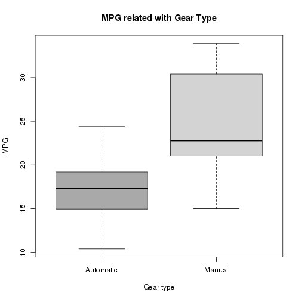

- With slidify it is easy to create slide presentations for your data products
- you can write it directly with R markdown
Igor Coelho
Programmer
You can also write R code like a normal R markdown
data(mtcars)
mtcars$am = as.factor(mtcars$am)
levels(mtcars$am) = c("Automatic", "Manual")
boxplot(mpg~am, data = mtcars,
col = c("dark grey", "light grey"),
xlab = "Gear type",
ylab = "MPG",
main = "MPG related with Gear Type")
Here is the result for the previous slide

To increse your knowledge wirh creating data products, visit the "Developing Data Products" course on
Thank you very much